DeepSeek-AI · Technical Report (arXiv:2606.19348, preview)
🏆 深度精读2026-04
DeepSeek-V4
Towards Highly Efficient Million-Token Context Intelligence
DeepSeek-AI ⋅ V4-Pro (1.6T / 49B activated) & V4-Flash (284B / 13B activated) ⋅ 1M context ⋅ MIT License
一句话：V4 的一切创新都围绕一个矛盾——vanilla attention 的 \(O(n^2)\) 复杂度卡死了「超长上下文 + test-time scaling + agent」这条路。它用混合注意力 CSA+HCA（压缩+稀疏）、mHC 残差稳定、Muon 优化器把 1M 上下文的成本压到 V3.2 的一小部分（Pro 27% FLOPs / 10% KV，Flash 10% / 7%），并在后训练用「先练领域专家 → 再多教师全词表 on-policy 蒸馏」取代了传统的统一混合 RL。作者坦承整体仍落后闭源 SOTA 约 3–6 个月。
摘要 Abstract（原文）
"We present a preview version of DeepSeek-V4 series, including two strong Mixture-of-Experts (MoE) language models — DeepSeek-V4-Pro with 1.6T parameters (49B activated) and DeepSeek-V4-Flash with 284B parameters (13B activated) — both supporting a context length of one million tokens. DeepSeek-V4 series incorporate several key upgrades in architecture and optimization: (1) a hybrid attention architecture that combines Compressed Sparse Attention (CSA) and Heavily Compressed Attention (HCA) to improve long-context efficiency; (2) Manifold-Constrained Hyper-Connections (mHC); (3) and the Muon optimizer for faster convergence and greater training stability. We pre-train both models on more than 32T diverse and high-quality tokens, followed by a comprehensive post-training pipeline that unlocks and further enhances their capabilities."
📝 全景导读（problem → solution → why）
灵魂一句
把「大模型继续 scale」的瓶颈重新定位到 注意力的二次复杂度 上——"this scaling paradigm is fundamentally constrained by the quadratic computational complexity of the vanilla attention mechanism ... a prohibitive bottleneck for ultra-long contexts"（§1）。V4 的每一个架构选择都是为拆掉这堵墙服务的。
problem · 要解决什么
test-time scaling（长思维链）与 agentic 长程任务都要吃超长上下文，但 vanilla attention 的 \(O(n^2)\) 计算 + 线性增长的 KV cache 让 1M 上下文在算力与显存上都不可承受。
solution · 给出的方案
三大架构/优化升级：(1) Hybrid Attention（CSA + HCA） 压缩+稀疏降长上下文成本；(2) mHC（Manifold-Constrained Hyper-Connections） 稳住深层残差；(3) Muon 优化器 加速收敛、增强稳定。后训练则废弃统一混合 RL，改为「专家 SFT+GRPO → 多教师 OPD 蒸馏」。
why · 凭什么成立（效率硬数字）
1M 上下文下，V4-Pro 只需 V3.2 的 27% 单 token 推理 FLOPs、10% KV cache；V4-Flash 更低至 10% FLOPs、7% KV（§1/Abstract）。相对经典 BF16 GQA baseline，1M 场景 KV cache 可降到 ≈2%。Figure 1 右图换算成倍数更直观：FLOPs Pro 3.7× / Flash 9.8× 更低，KV cache Pro 9.5× / Flash 13.7× 更小。
两个模型规格
V4-Pro：1.6T 总 / 49B 激活，61 层，训 33T tokens。V4-Flash：284B 总 / 13B 激活，43 层，训 32T tokens。两者均原生 1M 上下文、MIT 开源；均提供 Non-think / Think High / Think Max 三档推理。
📚 背景：为什么「稀疏 / 压缩注意力」是主线（外部知识，非本文原文）
标准注意力每个 query 要看全部 key，计算和 KV cache 都随序列线性/二次膨胀。DeepSeek 自 V3.2 起走「可学习稀疏注意力（DSA/NSA 一脉）」路线：用一个轻量打分器只挑最相关的少量 KV 做精算。V4 把它升级成「压缩(HCA) + 压缩后再稀疏选(CSA)」的混合体。
§1 Introduction
Introduction 已把 method 的自然语言版讲清楚（problem→solution→why 见上「全景导读」）。此外它明确列出三类贡献：架构（CSA+HCA、mHC、Muon）、基础设施（EP 通算重叠、TileLang、batch-invariant/确定性 kernel、异构 KV cache 等）、后训练（专家培养 + on-policy 蒸馏）。
自评定位（很诚实）：推理能力上 V4-Pro-Max "superior ... relative to GPT-5.2 and Gemini-3.0-Pro"，但 "falls marginally short of GPT-5.4 and Gemini-3.1-Pro, suggesting a developmental trajectory that trails state-of-the-art frontier models by approximately 3 to 6 months"。
§2 Architecture
2.1 继承自 DeepSeek-V3 的设计
沿用 DeepSeekMoE（细粒度专家 + 共享专家）、MTP（多 token 预测）、aux-loss-free load balancing（用 bias 项做负载均衡，不加辅助损失）。注意：MLA 被替换掉了（换成 CSA/HCA），不属于「继承」。
2.2 Manifold-Constrained Hyper-Connections (mHC)
📚 背景：Hyper-Connections（外部知识）
HC 是残差连接的推广——把单一残差流扩成 \(n\) 条、用可学习矩阵混合，缓解 residual/表示塌缩。但混合矩阵不受约束时会放大信号、深层堆叠不稳。
本文创新：把残差映射矩阵约束到双随机矩阵流形（Birkhoff polytope），使其谱范数 \(\le 1\) → 非扩张(non-expansive) → 深层信号传播稳定。实现上用 Sinkhorn-Knopp 迭代（max 20 步）投影到双随机流形，expansion factor \(n_{hc}=4\)。工程开销仅约 6.7%（靠 recomputation + fused kernel 压下，见 §3.4）。
核心公式（据本地 PDF 还原，下标无丢失）
HC 残差更新（Eq.1）——把残差流从 \(\mathbb{R}^{d}\) 扩宽到 \(\mathbb{R}^{n_{hc}\times d}\)：
\[ X_{l+1} = B_l X_l + C_l\,\mathcal{F}_l(A_l X_l) \]
manifold 约束（Eq.2）——把残差变换矩阵 \(B_l\) 约束到双随机矩阵流形（Birkhoff 多胞形），从而谱范数 \(\lVert B_l\rVert_2 \le 1\)（非扩张）：
\[ B_l \in \mathcal{M} := \{\, M\in\mathbb{R}^{n\times n} \mid M\mathbf{1}_n=\mathbf{1}_n,\ \mathbf{1}_n^{\top}M=\mathbf{1}_n^{\top},\ M\ge 0 \,\} \]
用 Sinkhorn–Knopp 迭代（Eq.8，\(t_{\max}=20\)，\(\mathcal{T}_r/\mathcal{T}_c\) 为行/列归一化）投影到该流形：
\[ M^{(0)}=\exp(\tilde{B}_l),\quad M^{(t)} = \mathcal{T}_r\!\big(\mathcal{T}_c(M^{(t-1)})\big),\quad B_l=M^{(t_{\max})} \]
变量：\(X_l\in\mathbb{R}^{n_{hc}\times d}\) 残差状态；\(A_l/B_l/C_l\) 输入/残差/输出映射（\(A_l=\sigma(\tilde A_l),\ C_l=2\sigma(\tilde C_l)\) 保正有界）；\(\mathcal{F}_l\) 第 l 层（如 MoE）；\(n_{hc}=4\)。
诚实边界：mHC 完整工程实现细节报告未展开（指向 Xie et al. 2026）；上式已用本地 PDF 文本层 + 逐式渲染核对，仅 \(\mathcal{T}_r/\mathcal{T}_c\) 原文只给名称、未给逐元素展开。
2.3 Hybrid Attention：CSA + HCA（核心）
两种压缩注意力交错(interleaved) 堆叠，分工明确：
① Compressed Sparse Attention (CSA) — 管「选相关」：
- 先把每 \(\ell\) 个 token 的 KV 压成 1 条（compression rate \(\ell=4\)，实际压 1/4）；
- 用 lightning indexer（indexer query heads 64、head dim 128）算 index score；
- top-k 选出最相关的压缩 KV 条目（Flash top-k=512 / Pro=1024）做 MQA core attention。
② Heavily Compressed Attention (HCA) — 管「极致压缩」："aims for extreme compression by consolidating the KV cache of every ℓ′ (≫ℓ) tokens into a single entry"，\(\ell'=128\)，dense 不稀疏。
其他细节：core attention 用 shared-KV MQA（一份 KV 服务所有 query head）；query head 很大，故做 grouped output projection（Flash 8 组 / Pro 16 组）降算力；partial-RoPE；每 query 额外接一条 sliding-window（w=128） 分支补局部依赖；带 attention sink（可学习 logit 让注意力和可不为 1）。
效率（2.3.4）：1M 上下文下 KV cache ≈ 基线的 2%——这是「高效百万上下文」的硬支撑。CSA 管「从压缩序列里选相关」、HCA 管「把远处历史极致压扁」，二者互补。
CSA 关键公式（Eq.11–19，据本地 PDF）
① KV 压缩（Eq.12）——每 \(m\) 个 token 的 KV 用 softmax 权重加权合并成 1 条（相邻块重叠），序列长压到 \(1/m\)：
\[ C^{\text{Comp}}_{i} = \sum_{j=mi}^{m(i+1)-1} S^{a}_{j}\odot C^{a}_{j} \;+\; \sum_{j=m(i-1)}^{mi-1} S^{b}_{j}\odot C^{b}_{j} \]
② Lightning indexer 打分（Eq.16）——query \(t\) 对压缩块 \(s\) 的相关性 = 多头 ReLU 内积加权和：
\[ I_{t,s} = \sum_{h=1}^{n^{I}_{h}} w^{I}_{t,h}\cdot \operatorname{ReLU}\!\big(q^{I}_{t,h}\cdot K^{\text{IComp}}_{s}\big) \]
③ top-k 稀疏选择（Eq.17）+ shared-KV MQA 核心注意力（Eq.19）：
\[ \mathcal{C}^{\text{SprsComp}}_{t} = \big\{\, C^{\text{Comp}}_{s} \mid I_{t,s}\in \mathrm{Top\text{-}k}(I_{t,:}) \,\big\},\qquad o_{t,i} = \operatorname{CoreAttn}\!\big(q_{t,i},\ \mathcal{C}^{\text{SprsComp}}_{t},\ \mathcal{C}^{\text{SprsComp}}_{t}\big) \]
HCA 关键公式（Eq.22–26）
每 \(m'\!\gg\! m\) 个 token 合并成 1 条（不重叠、压缩更重），且 不做 top-k 稀疏，MQA 用全部压缩 KV：
\[ C^{\text{Comp}}_{i} = \sum_{j=m'i}^{m'(i+1)-1} S_{j}\odot C_{j},\qquad o_{t,i} = \operatorname{CoreAttn}\!\big(q_{t,i},\ C^{\text{Comp}},\ C^{\text{Comp}}\big) \]
Attention sink（Eq.27）——给每个头一个可学习 sink logit \(z'_h\) 加进 softmax 分母，允许该头注意力和不为 1：
\[ s_{h,i,j} = \frac{\exp(z_{h,i,j})}{\sum_{k}\exp(z_{h,i,k}) + \exp(z'_{h})} \]
2.4 Muon Optimizer
📚 背景：Muon（外部知识）
Muon 对隐藏层 2D 权重矩阵做 momentum+Nesterov 后，用 Newton–Schulz 迭代把更新量正交化，再按 \(\sqrt{\max(m,n)}\cdot\text{rescale}\) 缩放。
本文：用 hybrid Newton–Schulz（8+2 步）；带来 "faster convergence and improved training stability"，且免去 QK-Clip。仅用于大部分参数，embedding / prediction head / 所有 RMSNorm 仍用 AdamW（它们不是典型 2D 隐藏矩阵）；update-RMS rescale=0.18 是为复用 AdamW 的学习率标度。
核心公式（Eq.28 + Algorithm 1，据本地 PDF）
Hybrid Newton–Schulz 正交化迭代——把更新矩阵近似正交化到 \(UV^{\top}\)（前 8 步 \((a,b,c)=(3.4445,-4.7750,2.0315)\) 快速收敛，后 2 步 \((2,-1.5,0.5)\) 把奇异值稳到 1）：
\[ M_k = a\,M_{k-1} + b\,(M_{k-1}M_{k-1}^{\top})M_{k-1} + c\,(M_{k-1}M_{k-1}^{\top})^{2}M_{k-1} \]
单步更新（动量 + Nesterov + 正交化 + \(\sqrt{\max(n,m)}\) 缩放 + 解耦权重衰减）：
\[ M_t = \mu M_{t-1} + G_t,\quad O_t = \operatorname{NS}(\mu M_t + G_t)\cdot\sqrt{\max(n,m)}\cdot\gamma,\quad W_t = W_{t-1}(1-\eta\lambda) - \eta\,O_t \]
§3 General Infrastructures（训练/推理基建）
这一章是 V4「工程即模型」哲学的集中体现——很多架构选择是和系统协同设计的。
3.1 EP 细粒度通信-计算重叠：MoE 的 all-to-all 通信易暴露成瓶颈；V4 做细粒度算通重叠，实测 1.50–1.73× 加速（RL/延迟敏感场景峰值 1.96×，理论 1.42→1.92×），并开源了 MegaMoE。
3.2 TileLang 写 kernel：把 kernel 的 host 调用开销从数百 μs 压到 <1 μs，配合 Z3 SMT 求解器做 tile 配置，并支持逐位(bitwise)可复现。
3.3 Batch-Invariant / Deterministic Kernels（本章独门点）：dual-kernel attention、用 DeepGEMM 替 cuBLAS（弃 split-k）、反向弃用 atomicAdd——保证 batch-invariance + 确定性，直击 RL 训练-推理数值失配（rollout 走推理引擎、更新走训练引擎，两者数值不一致会毒化 RL）。
3.4 训练框架：为 Muon 定制 hybrid ZeRO（梯度 BF16 通信、通信量减半，ZeRO padding <10%）；mHC 低成本实现（recomputation+fused kernel，开销 6.7%）；two-stage contextual parallelism（两阶段上下文并行，服务压缩注意力的长序列）；autograd 的 tensor-level checkpointing（细粒度重算控制）。
3.5 推理框架：异构 KV cache（CSA/HCA/SWA 三种 KV 布局不同）+ State Cache + 落盘 on-disk 共享前缀复用三档策略，支撑 1M 上下文的服务。
§4 Pre-Training
4.1 数据
语料 >32T tokens（数学/代码/网页/长文档等），在 V3 数据上做「更高质量、更长有效上下文」的增量。网页去污过滤 "batched auto-generated and templated content" 以 "mitigating the risk of model collapse"；agentic 数据在 mid-training 阶段引入；关键差异是预训练用 sample-level attention masking（打包多文档到同序列时阻断跨文档串扰）；沿用 128K 词表 + FIM。
4.2 模型配置对照表（Flash vs Pro）
| 超参 | V4-Flash | V4-Pro |
|---|---|---|
| 层数 / hidden dim | 43 / 4096 | 61 / 7168 |
| 前两层注意力 | 纯 Sliding Window | HCA |
| CSA 压缩率 / top-k | 4 / 512 | 4 / 1024 |
| HCA 压缩率 ℓ′ | 128 | 128 |
| query heads / head dim | 64 / 512 | 128 / 512 |
| query 压缩维 / 输出分组 | 1024 / 8 | 1536 / 16 |
| routed / shared experts | 256 / 1 | 384 / 1 |
| expert 中间维 / 每 token 激活 | 2048 / 6 | 3072 / 6 |
| 前 3 个 MoE 层 routing | Hash routing | Hash routing |
| MTP depth / mHC \(n_{hc}\) | 1 / 4 | 1 / 4 |
| 总参 / 激活参 | 284B / 13B | 1.6T / 49B |
前 3 个 MoE 层用无参确定性的 Hash routing 稳住训练早期（router 早期最易塌缩）。
4.3 训练配置与稳定性
优化器：主体 Muon + embedding/head/RMSNorm 用 AdamW。序列长度渐进：4K → 16K → 64K → 1M；先 dense attention warmup（Flash 前 1T tokens），到 64K 处引入稀疏，且先短暂「热身」CSA 的 lightning indexer 再全程稀疏训练（否则一上来就稀疏会选错 KV、训崩）。MTP loss weight 末期 0.3→0.1。
| 训练配置（§4.2.2） | V4-Flash | V4-Pro |
|---|---|---|
| 主体优化器 / 其余模块 | Muon / AdamW（embedding·head·RMSNorm） | 同 Flash |
| Muon momentum / wd / update-RMS rescale | 0.95 / 0.1 / 0.18 | 同 Flash |
| 训练 token 数 | 32T | 33T |
| max batch size (tokens) | 75.5M | 94.4M |
| peak LR / end LR (cosine) | 2.7×10⁻⁴ / 2.7×10⁻⁵ | 2.0×10⁻⁴ / 2.0×10⁻⁵ |
| 序列长度分阶段 | 4K → 16K → 64K → 1M | 4K → 16K → 64K → 1M |
| dense warmup / 稀疏引入点 | 前 1T tokens / seq=64K | 更长 dense 阶段 / seq=64K |
| bias update / balance loss（aux-free） | 0.001 / 0.0001 | 0.001 / 0.0001 |
| MTP loss weight | 0.3 → 0.1 | 0.3 → 0.1 |
稳定性两技巧（诊断："spikes ... consistently tied to outliers in the MoE layers, and the routing mechanism itself appears to exacerbate ... these outliers"）：
- Anticipatory Routing：解耦 backbone 与 router 的同步更新，routing indices 用历史参数预取预计算；额外开销压到 ~20% 且只在 loss spike 时自动触发。
- SwiGLU Clamping：线性分量钳到 [−10,10]、gate 上界 10，直接消 outlier，且不损性能。
诚实边界：作者明说这两个技巧的机理 "remains an open question"——有效但没完全搞懂为什么。
4.4 Base 模型评测（Table 1，节选）
| 维度 | Benchmark | V3.2-Base (37B/671B) | V4-Flash-Base (13B/284B) | V4-Pro-Base (49B/1.6T) |
|---|---|---|---|---|
| 知识 | MMLU-Pro | 65.5 | 68.3 | 73.5 |
| 知识 | FACTS Parametric | 27.1 | 33.9 | 62.6 |
| 知识 | Simple-QA verified | 28.3 | 30.1 | 55.2 |
| 知识 | MultiLoKo | 38.7 | 42.2 | 51.1 |
| 代码 | HumanEval | 62.8 | 69.5 | 76.8 |
| 数学 | MATH | 60.5 | 57.4 | 64.5 |
| 长文 | LongBench-V2 | 40.2 | 44.7 | 51.5 |
结论：Flash-Base 以更小参数打赢更大的 V3.2-Base（尤其世界知识/长上下文）；Pro-Base 近乎全面碾压，知识密集型（FACTS 27→63、SimpleQA 28→55）提升最猛。
§5 Post-Training（本报告最大创新之一）
两阶段范式，整段替换 V3.2 的混合 RL。RL 没消失，而是被「下放」到第一阶段的每个专家内部；第二阶段的合并完全交给蒸馏。
Stage 1 · 领域专家（SFT → GRPO-RL）
数学/代码/agent/指令遵循等各自从 base 出发独立训（>10 个专家）。易验证任务用规则/测试用例打分；难验证任务弃用标量 RM，改用 生成式奖励模型 GRM——actor 兼任裁判，rubric 引导、直接对「评判行为」也做 RL，联合优化生成与评判，只需极少人工标注。RL 算法为 GRPO（超参沿用 R1/V3；报告未重推 GRPO 公式）。
Stage 2 · On-Policy Distillation (OPD)
把 10+ 专家蒸成一个学生。学生自采 rollout，按加权反向 KL 向「当前任务最相关专家」对齐：
\[ \mathcal{L}_{\text{OPD}}(\theta)=\sum_{i=1}^{N} w_i\, D_{\mathrm{KL}}\!\left(\pi_\theta \,\big\|\, \pi_{p_i}\right) \]
full-vocabulary logit 蒸馏：不像别的方法只对采样到的 token 打分（token-level 估计方差大、易不稳），V4 用完整词表(>100k)的 logit 分布算 reverse KL，更稠密更稳。工程避免爆显存：只缓存 teacher 最后一层 hidden state、训练时现场重构 logits + 按 teacher index 排序样本使单头驻留 + TileLang kernel 算 KL。
📚 为什么这么设计（相比 V3.2 混合 RL）
多领域目标同时 RL 容易互相打架/退化，权重合并也退化。先让专家各自练到最好，再用 logits 层面的蒸馏把能力融进统一参数空间，规避了混合 RL / 权重合并的退化。代价：full-vocab 蒸馏会把坏 teacher 的错误也精确编码进 student，专家数据质量即天花板。
配套设计
三档 reasoning effort（Non-think / Think High / Think Max，用
<think> 分隔；靠不同 length penalty + context window 训出）；Interleaved Thinking（1M 上下文下工具调用全程保留推理痕迹、跨 user message 不丢）；|DSML| XML 工具调用格式（比 JSON 更少转义/调用错误）；FP4(MXFP4) QAT（MoE 权重 + CSA indexer QK path，FP4→FP8 无损反量化以复用 FP8 框架）；token 粒度 WAL 的可抢占容错 rollout（论证「从头重生成会引入 length bias」）；DSec 沙箱（Rust，单集群数十万并发，四种执行底座）。| 推理模式 (Table 2) | 定位 | 响应格式 | 评测 context |
|---|---|---|---|
| Non-think | 快速直觉，日常 / 低风险 | 无 <think>，仅 summary | 8K |
| Think High | 有意识分析、更慢更准，复杂中等风险 | <think>thinking</think> summary | 128K |
| Think Max | 推理推到极限、探索模型能力边界 | High + system prompt 注入指令 | 384K |
Think Max 注入指令（Table 3 原文节选）："Reasoning Effort: Absolute maximum with no shortcuts permitted. You MUST be very thorough ..."——要求彻底分解问题定位根因、对所有路径/边界/对抗场景压力测试、把被否决的假设也显式写出。
📊 全文评测汇总
Instruct 模型：Flash vs Pro × 三档推理（Table 7 节选）
| 维度 | Benchmark | Flash Non/High/Max | Pro Non/High/Max |
|---|---|---|---|
| 知识 | SimpleQA-Verified | 23.1 / 28.9 / 34.1 | 45.0 / 46.2 / 57.9 |
| 推理 | GPQA Diamond | 71.2 / 87.4 / 88.1 | 72.9 / 89.1 / 90.1 |
| 推理 | HLE | 8.1 / 29.4 / 34.8 | 7.7 / 34.5 / 37.7 |
| 代码 | LiveCodeBench | 55.2 / 88.4 / 91.6 | 56.8 / 89.8 / 93.5 |
| 代码 | Codeforces (Elo) | — / 2816 / 3052 | — / 2919 / 3206 |
| 数学 | HMMT 2026 Feb | 40.8 / 91.9 / 94.8 | 31.7 / 94.0 / 95.2 |
| 长文 | MRCR 1M | 37.5 / 76.9 / 78.7 | 44.7 / 83.3 / 83.5 |
| Agent | Terminal-Bench 2.0 | 49.1 / 56.6 / 56.9 | 59.1 / 63.3 / 67.9 |
| Agent | SWE Verified | 73.7 / 78.6 / 79.0 | 73.6 / 79.4 / 80.6 |
why（§5.3）："the Max mode, which employs longer contexts and reduced length penalties in RL, outperforms the High mode on the most challenging tasks." Non-think 在难题上崩塌（Apex：Pro 0.4→27.4→38.3），说明前沿数学/推理几乎完全依赖长思维链；Flash 与 Pro 差距主要在知识类，推理/代码给足 thinking budget 后 Flash 逼近 Pro。
vs 前沿模型（Table 6，可信部分节选）
赢：Apex Shortlist(90.2)、Codeforces(3206，人类第 23)、LiveCodeBench(93.5)。负：SimpleQA-Verified(57.9 vs Gemini 75.6)、HLE、Terminal-Bench(GPT 75.1)、1M 长上下文（MRCR/CorpusQA 均落后 Claude Opus 4.6，但超过 Gemini-3.1-Pro）。形式化数学：Putnam-2025 DeepSeek-V4 = 120/120（proof-perfect）。
| Benchmark | Opus-4.6-Max | GPT-5.4-xHigh | Gemini-3.1-Pro | K2.6-Think | GLM-5.1-Think | DS-V4-Pro-Max |
|---|---|---|---|---|---|---|
| SimpleQA-Verified | 46.2 | 45.3 | 75.6 | 36.9 | 38.1 | 57.9 |
| HLE | 40.0 | 39.8 | 44.4 | 36.4 | 34.7 | 37.7 |
| Apex Shortlist | 85.9 | 78.1 | 89.1 | 75.5 | 72.4 | 90.2 |
| Codeforces (Elo) | — | 3168 | 3052 | — | — | 3206 |
| LiveCodeBench | 88.8 | — | 91.7 | 89.6 | — | 93.5 |
| Terminal-Bench 2.0 | 65.4 | 75.1 | 68.5 | 66.7 | 63.5 | 67.9 |
| SWE Verified | 80.8 | — | 80.6 | 80.2 | — | 80.6 |
| BrowseComp | 83.7 | 82.7 | 85.9 | 83.2 | 79.3 | 83.4 |
| GDPval-AA (Elo) | 1619 | 1674 | 1314 | 1482 | 1535 | 1554 |
| Toolathlon | 47.2 | 54.6 | 48.8 | 50.0 | 40.7 | 51.8 |
上表为已交叉核对的可信部分（Agentic 块 + Abstract 柱状图确认）；知识/长文块因 OCR 行内错位未纳入。整体：DS-V4-Pro-Max 在 Apex Shortlist / Codeforces / LiveCodeBench 领先，SimpleQA / HLE 明显落后 Gemini-3.1-Pro，agent 类与闭源第一梯队接近但未超越。
诚实边界：Table 6 的知识/长文块在 arXiv→文本转换中出现「行内最优值错位」，竞品分数归属不确定处未硬编（DeepSeek 自身列已用 Table 7 交叉核对）。
真实场景
中文写作胜率显著超 Gemini-3.1-Pro；白领任务 vs Opus-4.6-Max non-loss rate 63%（弱在指令遵循与排版美观）；R&D 代码 agent（30 内部真实任务）Pass=70，介于 Sonnet 4.5(47) 与 Opus 4.5(67/73) 之间，内部 85 名开发者中 52% 认为可作默认主力编码模型。
🎯 Conclusion + 诚实边界
贡献："break the efficiency barrier of ultra-long-context processing"；CSA+HCA 带来长序列效率的巨大飞跃，为 test-time scaling / long-horizon / online learning 铺路；Pro-Max "redefines the state-of-the-art for open models"。
作者坦承的局限：
- 架构过复杂："we retained many preliminarily validated components and tricks, which ... made the architecture relatively complex" → 未来要蒸馏到最精简、更 elegant。
- 稳定性机理不明：Anticipatory Routing / SwiGLU Clamping 虽有效但 "their underlying principles remain insufficiently understood"。
- 整体落后闭源 SOTA 约 3–6 个月。
未来方向：新维度稀疏性（更稀疏的 embedding）、低延迟架构、long-horizon 多轮 agent、多模态、更好的数据合成。
本页整体诚实边界：底本为 arXiv HTML→文本，(1) Table 6 竞品分数有错位、未硬编；(2) §2.3/§3 多处公式下标/常数被提取吃掉，机制方向可信、精确形式待回查 PDF；(3) GRPO 内部推导、\(w_i\) 具体算法、GRM 损失、mid-training 细节报告本身未给。
📖 逐段精读 · 问答记录
随讨论持续累积「问题 + 讲解」。最后更新 2026-08-03。
Q1 · DeepSeek-V4 的 post-training 是怎么实现的？
答：两阶段范式（详见 §5）。Stage 1 按领域各自 SFT→GRPO-RL 练专家，易验证任务用规则/测试用例、难验证任务用「actor 兼裁判」的 GRM；Stage 2 用多教师（10+）on-policy 蒸馏，学生自采轨迹按加权 reverse KL \(\sum_i w_i D_{\mathrm{KL}}(\pi_\theta\|\pi_{p_i})\) 向最相关专家对齐，且坚持全词表 logit 蒸馏，工程上靠「缓存 teacher hidden state 现场重构 logits + 单头驻留」避免物化海量 logits。这整套取代了 V3.2 在统一模型上的混合 RL。
Q2 · 请详细阅读整份报告
答：已完成全文精读（§1–§5 + 评测 + 结论，见本页各区块）。主线是「用压缩+稀疏注意力打破 1M 上下文的效率墙」，配合 mHC/Muon 稳训练、专家蒸馏做后训练，工程上大量训练-推理协同设计（确定性 kernel、异构 KV cache、FP4 QAT）。
Q3 · 整理成 HTML 报告，先上线再精读
答：已生成本单页精读报告并经 PushGo 部署上线（personal_demo_files 站点）；随后补入 15 张论文原图与 §2 架构核心公式，多次部署均 HEALTHY。
Q4 · 继续补
答：本轮补齐 §4.3 训练配置对照表、§5 reasoning effort 三档表 + Think Max 注入指令、评测 Table 6「vs 前沿模型」可信数值表，并更新问答记录。
🖼 论文原图（本地 PDF 抠取，caption 逐字原文未改写）
覆盖总览(Fig1)、架构(Fig2/3/4)、系统(Fig5/6)、后训练(Fig7) 与评测(Fig8/9/10) 关键图。
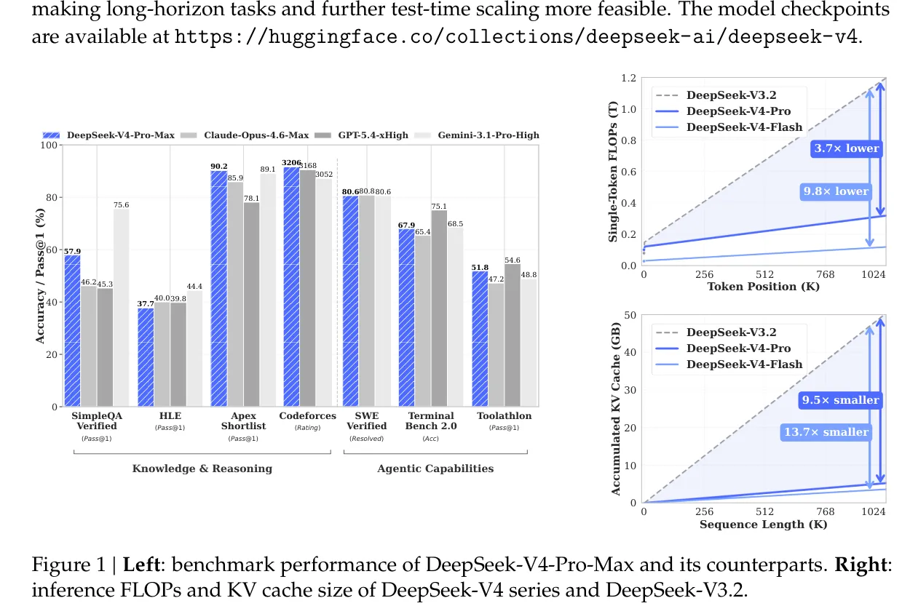
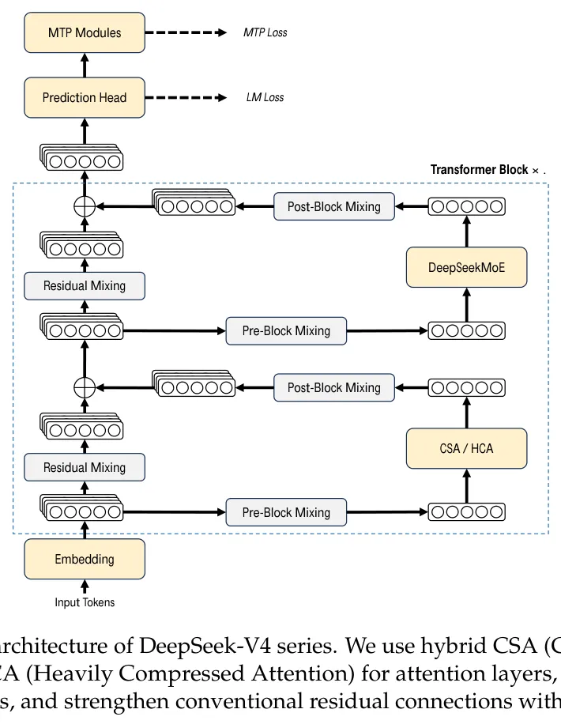
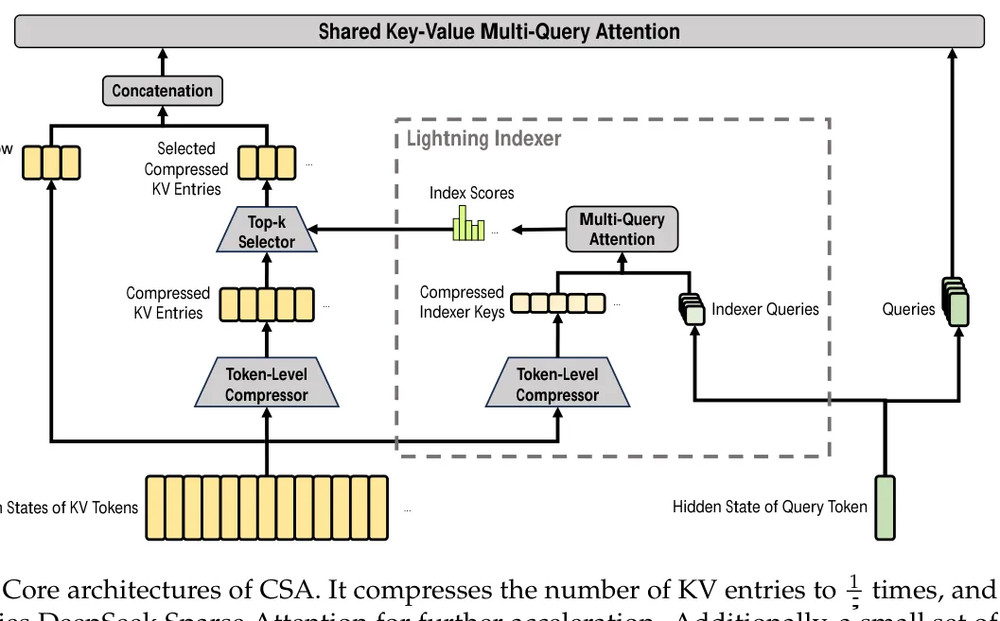
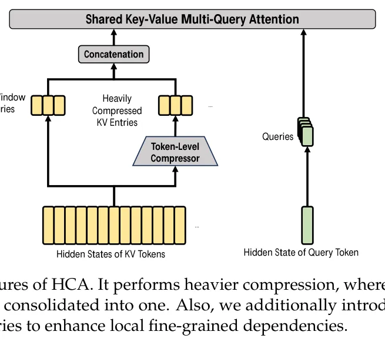
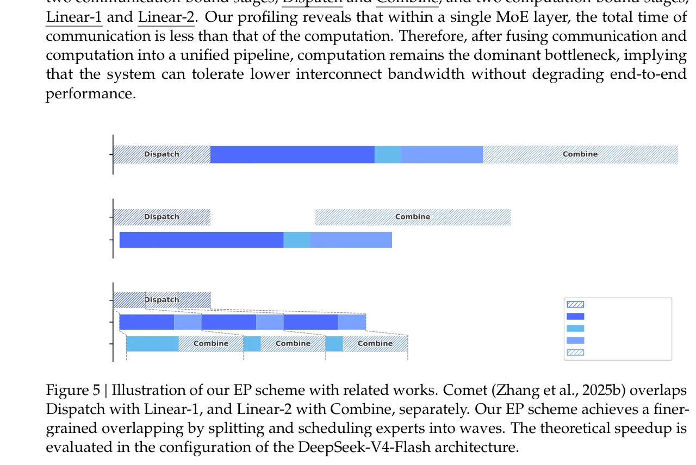
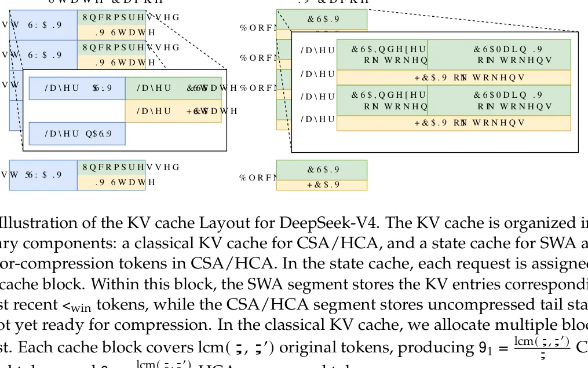
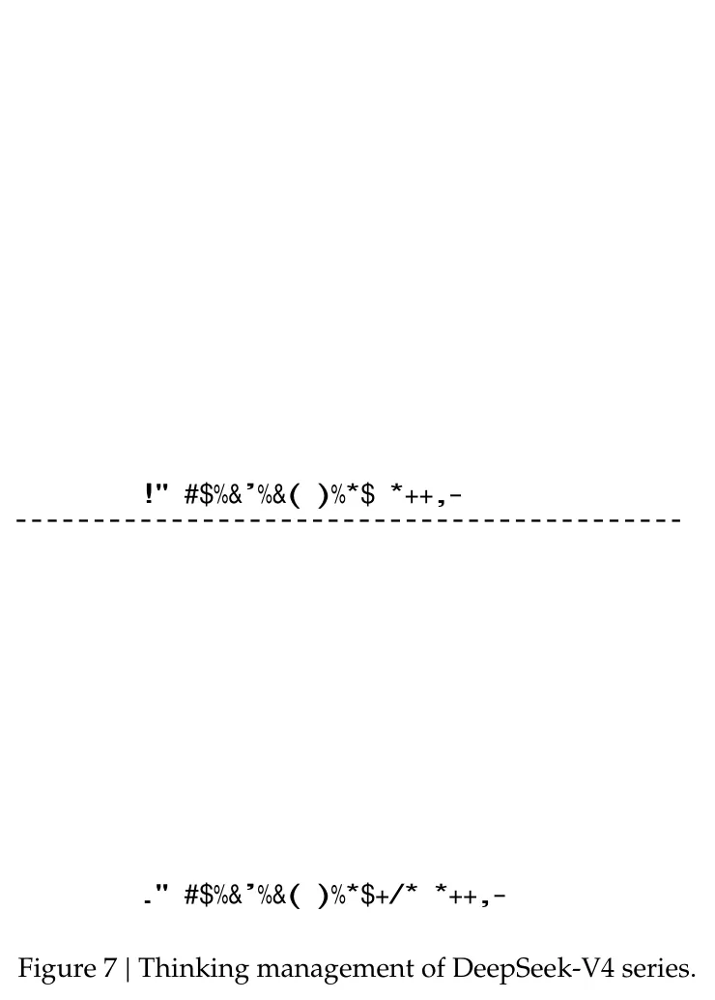
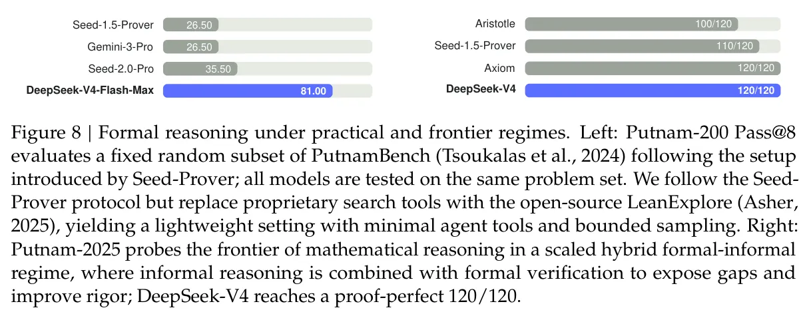
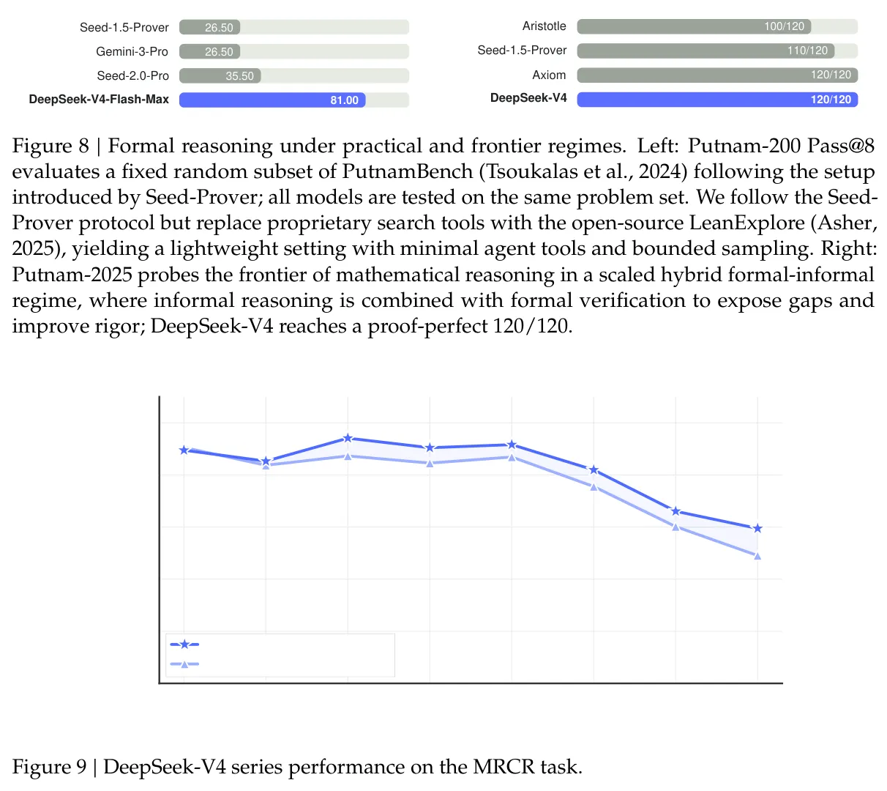
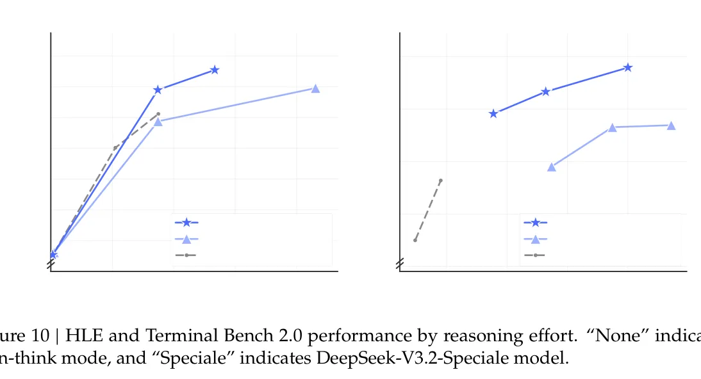
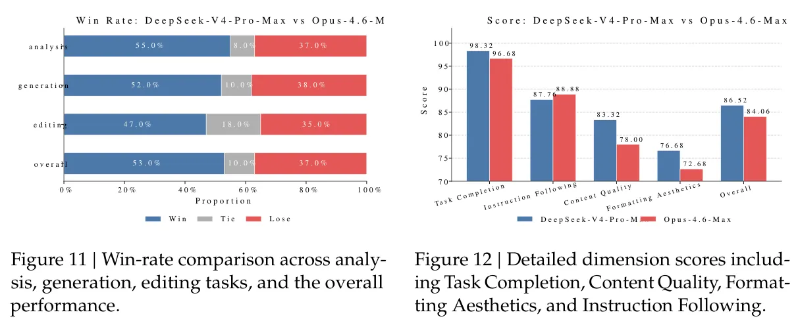

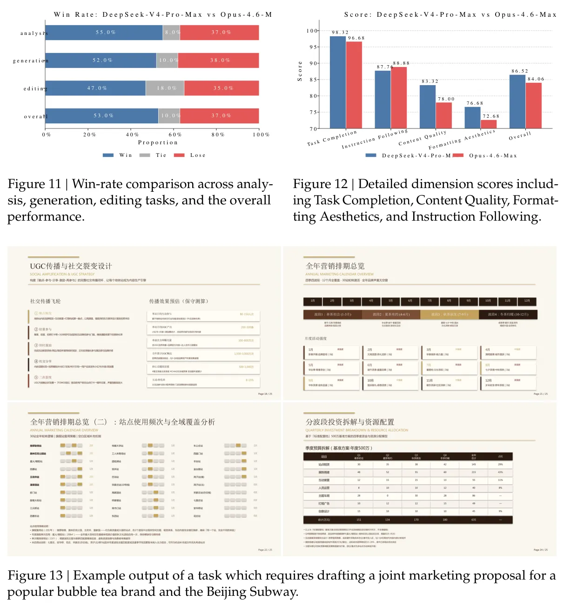
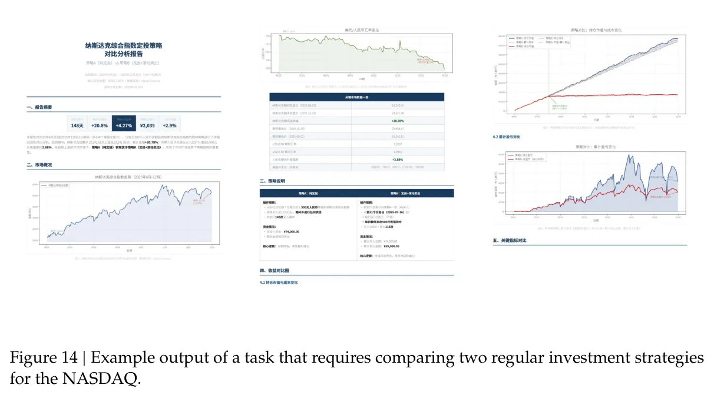
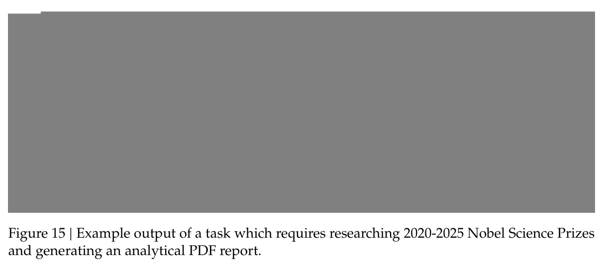
DeepSeek-V4 技术报告精读 · 由论文精读工作流生成 · 内容以 arXiv:2606.19348 原文为准